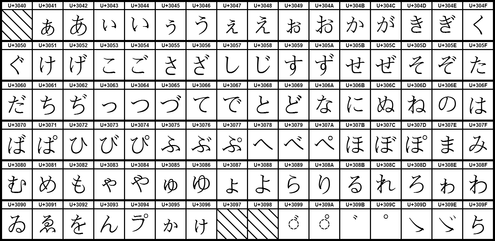
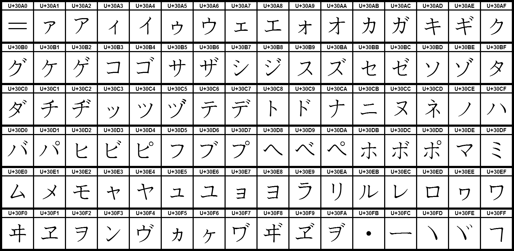

El japonés está compuesto por tres sistemas de escitura. Dos alfabetos silábicos (hiragana y katakana) y un sistema de ideogramas (kanji). El dominio de los tres modos de escritura son esenciales para el uso de la lengua japonesa escrita
Hiragana: Es un sistema silábico que se usa principalmente para escribir palabras de origen japonés y las terminaciones gramaticales. Consiste en caracteres curvos y fluidos. Su origen se encuentra en las transcripciones fonéticas de los carácteres chinos. Abajo se puede encontrar una tabla de referencia
Katakana: Similar al hiragana, el alfabeto katakana es otro sistema silábico, pero se usa para escribir palabras extranjeras, nombres y términos técnicos. El origen de este sistema es similar al hiragan, pero con un estilo más simple y angular. Abajo se muestra una tabla de referencia
Kanji: Este sistema utiliza caracteres chinos que representan palabras y conceptos. Los Kanji son más complejos y numerosos, por lo que no se puede referenciar en una tabla como los sistemas anteriores. En su lugar se proporciona un acceso a un diccionario online en que se puede consultar individualmente el kanji deseado. Para acceder pinche aquí
Para escribir en japonés, se utiliza una mezcla de hiragana, katakana y kanji. Esto puede observarse en la siguiente frase de ejemplo:
El uso de los pronombres de primera persona es un tema con unas reglas contextuales específicas. Mientras que en español existe únicamente el pronombre 'Yo', en japonés esta primera persona varía según el contexto, el género y la formalidad del sujeto. A continuación se recogen los principales:
Ejemplo: 私はスペイン人です (Yo soy español). Esta oración puede corresponder a un entorno formal de una presentación o una situación neutral en la que se conoce a una persona nueva.
Ejemplo: ねえ、僕と友達になってくれる？ (Me encanta el fútbol). En este ejemplo se expresa una situación muy informal en la que puede deducirse que el sujeto es un hombre.
Ejemplo: 俺はサッカーが大好きだ (oye, ¿quieres ser mi amigo?). En este ejemplo se expresa una situación mucho más informal en la que puede deducirse que el sujeto es un hombre joven.
Ejemplo: あたしは今日映画を見に行った (Hoy fui a ver una película). En este ejemplo se expresa una situación muy informal en la que puede deducirse que el sujeto es una mujer.
El sufijo 方 (かた/kata)añadido a verbos se interpreta como "manera" o "forma" de realizar una acción específica. Puede aparecer escrito en kanji o en hiragana. Las normas de su uso son
カレーの作り方を教えてください。
(Enséñame la forma de hacer curry)
漢字の読み方がわからない。
(No sé como escribir el kanji)
Nota: Este sufijo también puede utilizarse como muestra de respeto como sufijo nominal. Este uso no está tan estendido pero es importante tenerlo en cuenta
El sufijo 人 se utiliza para diferentes situaciones. Dependiendo del contesto, puede tomar un significado diferente. A continuación se recogen los principales
スペイン人 (persona española/de españa)
日本人 (persona japonesa/de Japón)
一人 (ひとり/hitori/una persona)
二人 (ふたり/futari/dos personas)
三人 (さんにん/sannin/tres personas)
四人 (よんにん/yonnin/cuatro personas)
Nota: Esta sufijo también puede aparecer como sustantivo independiente con el significado de "persona"
El sufijo こと se utiliza principalmente como palabra comodín, ya que su significado literal es "cosa". Su uso como sufijo de verbos, permite adoptar a estosla categoría gramatical de sustantivos. A continuación se explica esta situación con ejemplos
私は絵を書くことが好きです
(Me gusta dibujar)
彼女は料理を作ることが下手です。
(A ella se le da mal cocinar)
Nota: En español la traducción de los verbos con este sufijo es el infinitivo ('comer', 'pintar'). Sin embargo, en japonés es necesario el uso del sufijo para que estos puedan actuar de sustantivo.
En japonés las diferentes conjugaciones aplicadas a los verbos varían dependiendo del contexto y el grado de formalidad que se quiera expresar. A modo general se encuentra la forma corta o forma diccionario y la forma ます. A continuación se especifica más sobre ellas
作る (つくる/tsukuru/hacer)、食べる (たべる/taberu/comer)、書く (かく/kaku/escribir)